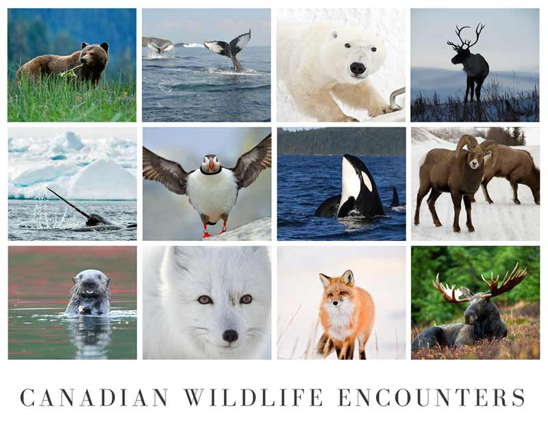

Discover the Untamed Beauty of Canada
From majestic wildlife to breathtaking landscapes, Canada is a haven for nature enthusiasts and wildlife lovers.
Canada's Diverse Wildlife
Canada is home to a wide variety of wildlife, including iconic species such as the grizzly bear, moose, and the majestic bald eagle.
National Parks and Conservation Efforts
- Banff National Park: Canada’s first national park, known for its stunning mountainous terrain.
- Jasper National Park: A larger park known for its vast wilderness and wildlife.
- Pacific Rim National Park Reserve: Famous for its coastal rainforests and marine life.

Flora and Fauna
Canada's flora and fauna are as diverse as its landscapes, featuring a range of species from the coastal, mountainous, and Arctic regions.
- Coastal Regions
- Rich in marine life, including whales, seals, and sea lions.
- Mountainous Regions
- Home to a variety of wildlife, including bears, wolves, and mountain goats.
- Arctic Regions
- Known for its polar bears, caribou, and Arctic foxes.
Eco-Tourism in Canada
- Responsible Wildlife Viewing
- Guidelines on how to observe wildlife in a respectful and non-intrusive manner.
- Sustainable Tourism Initiatives
- Efforts to preserve Canada's natural beauty for future generations.